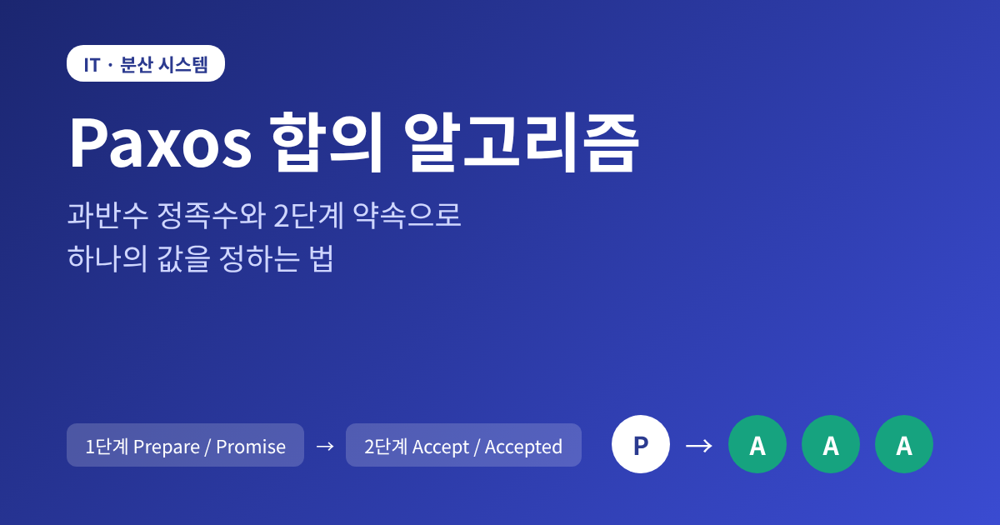
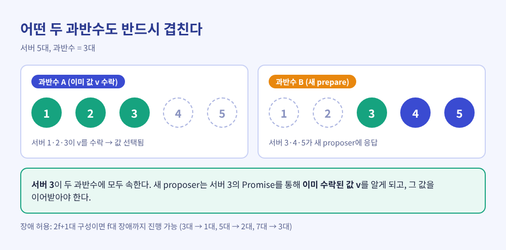
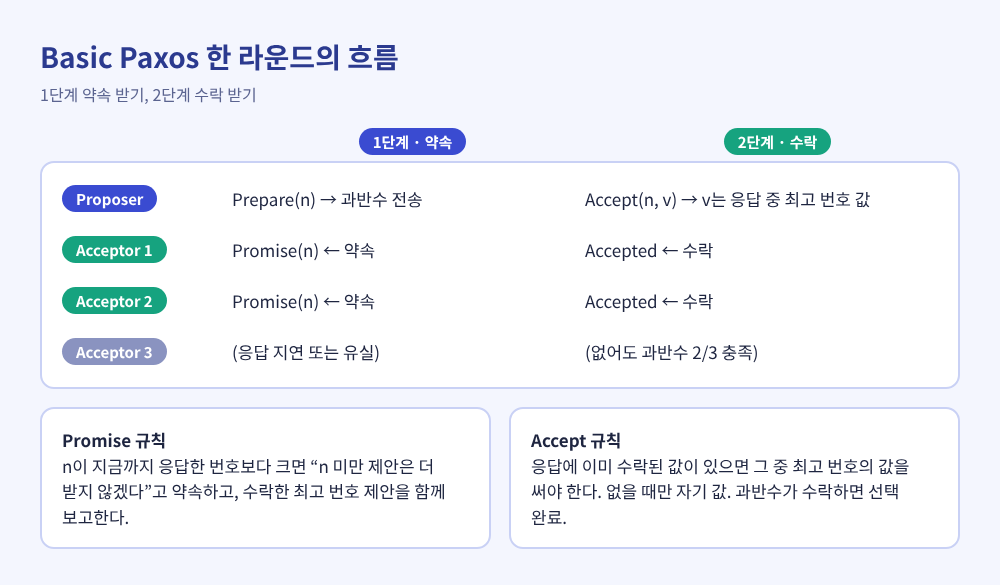
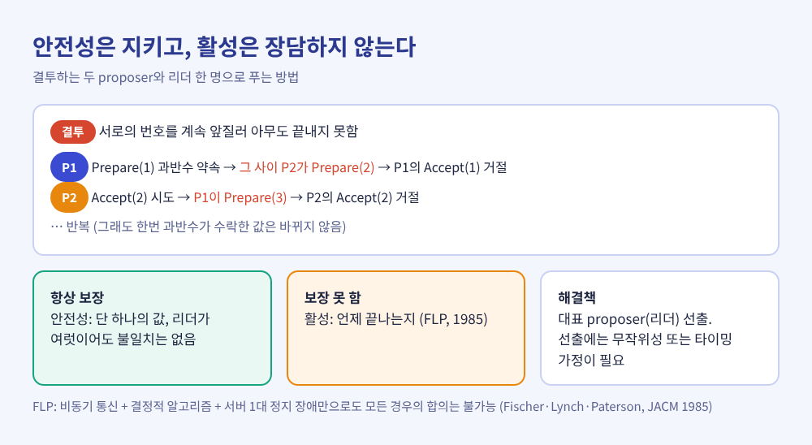
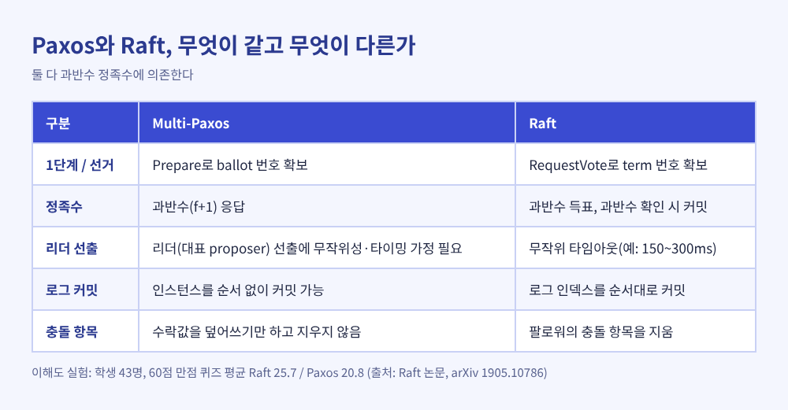
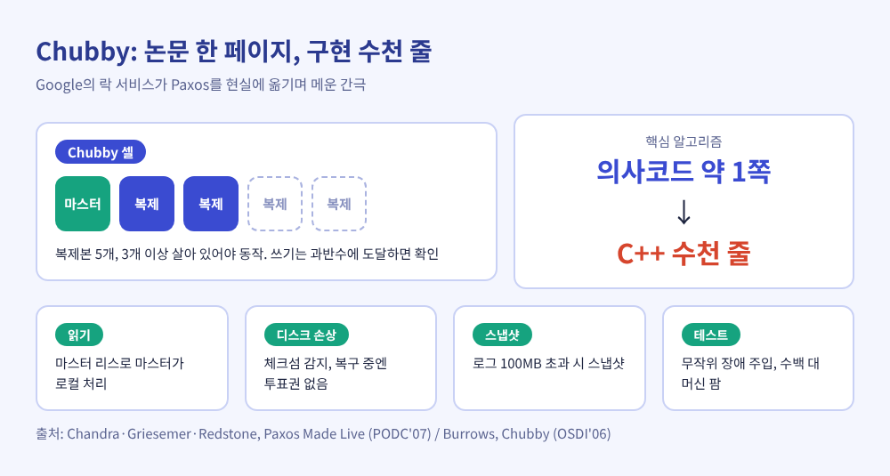

Paxos 합의 알고리즘 원리, 과반수와 2단계 약속으로 값을 정하는 법

이번 글에서는 Paxos 합의 알고리즘이 어떻게 작동하는지 정리해 보겠습니다.
핵심은 두 가지입니다. 값은 과반수 서버가 받아들여야 확정되고, 그 과정은 '약속'과 '수락'이라는 두 단계로 나뉩니다.
서버가 멈추고 메시지가 사라져도 단 하나의 값만 선택되도록 만든 장치를, 원리부터 현실의 구현까지 따라가 보겠습니다.
■ 합의가 왜 어려운 문제인가
서버 세 대에 같은 데이터를 복제해 두었다고 가정해 보겠습니다.
두 클라이언트가 동시에 서로 다른 값을 쓰려 하면, 서버마다 받은 순서가 달라질 수 있습니다.
이때 모든 서버가 같은 값에 동의하도록 만드는 일이 합의(consensus)입니다.
Lamport는 안전성 요건을 셋으로 정리했습니다.
제안된 값만 선택될 수 있고, 선택되는 값은 단 하나이며, 선택되지 않은 값을 선택되었다고 알아서는 안 됩니다.
전제 조건도 분명합니다. 서버는 멈췄다가 재시작할 수 있고, 메시지는 늦거나 중복되거나 사라질 수 있습니다.
다만 메시지가 변조되거나 서버가 거짓말을 하는 경우, 즉 비잔틴 장애는 다루지 않습니다.
■ 그리스 섬의 시간제 의회에서 시작된 이야기
이름의 출처는 가상의 그리스 Paxos 섬입니다.
의원들은 생업이 따로 있어 의사당을 계속 들락거리는데, 그래도 의회는 법령을 통과시켜야 합니다.
의원이 프로세스, 자리를 비우는 일이 장애에 대응합니다. 전령이 메시지를 전하지만 중복되거나 늦거나 끝내 도착하지 않을 수 있다는 설정도 실제 네트워크와 같습니다.
Lamport가 이 논문을 처음 제출한 것은 1990년으로, 위키피디아는 1989년으로 적고 있어 자료에 따라 한 해 차이가 있습니다.
당시 심사위원 세 명은 논문을 '약간 흥미로운 정도'라 평하며 Paxos 부분을 빼라고 했습니다.
논문은 한참 묻혀 있다가 SRC 연구자들이 실제 시스템에 쓰고 Lynch, De Prisco, Lampson이 명세와 증명을 내놓으면서 다시 주목받았습니다.
"The Part-Time Parliament"는 1998년 5월 ACM TOCS에 실렸고, 2012년에는 SIGOPS 명예의 전당 상을 받았습니다.
시작은 의외였습니다. 한 파일 시스템 팀이 '비잔틴이 아닌 어떤 장애에도 일관성을 지키고, 과반수가 살아 있는 한 진행한다'고 주장하자, Lamport는 그것이 불가능함을 보이려다 오히려 Paxos를 발견했다고 밝혔습니다.
■ 첫 번째 원리, 과반수 정족수
Paxos의 안전성은 한 문장에서 출발합니다. 어떤 두 과반수도 적어도 한 서버를 공유합니다.
다섯 대 중 세 대가 값을 받아들였다면, 이후 다른 세 대를 모아도 그중 한 대는 이미 그 값을 아는 서버입니다.
이 겹침이 '이미 정해진 값'의 기억을 다음 라운드로 이어 줍니다.
장애 허용 범위도 여기서 나옵니다. 고전적인 구성은 2f+1대의 acceptor로 f대의 장애를 견딥니다.
Google의 Chubby 셀은 보통 복제본 다섯 개를 두고 세 개가 살아 있어야 동작하며, Raft 논문도 다섯 서버 클러스터가 두 대의 장애를 견딘다고 설명합니다.
세 대는 한 대, 다섯 대는 두 대, 일곱 대는 세 대입니다. 서버를 늘릴수록 내성이 커지지만, 과반수를 모아야 하는 만큼 합의 비용도 함께 늘어납니다.

■ 두 번째 원리, 2단계 약속
Paxos에는 세 역할이 있습니다. 값을 제안하는 proposer, 투표하는 acceptor, 결과를 알게 되는 learner입니다.
한 서버가 세 역할을 겸하는 경우가 많습니다.
1단계: Prepare와 Promise
proposer는 고유한 번호 n을 골라 과반수 acceptor에게 prepare 요청을 보냅니다.
acceptor는 지금까지 응답한 어떤 번호보다 n이 크다면 '번호가 n보다 작은 제안은 더 받지 않겠다'고 약속합니다. 이미 수락한 제안이 있다면 그중 번호가 가장 높은 것을 함께 알려 줍니다.
2단계: Accept와 Accepted
과반수의 약속을 받은 proposer는 accept 요청을 보냅니다.
이때 값은 자유롭게 정할 수 없습니다. 응답 속에 이미 수락된 값이 있다면 번호가 가장 높은 값을 그대로 이어받아야 하고, 아무도 수락한 값이 없을 때만 자기 값을 제안할 수 있습니다.
acceptor는 더 큰 번호의 prepare에 약속한 적이 없을 때만 수락합니다. 과반수가 수락하면 값은 선택된 것입니다.
"먼저 약속을 받고, 이미 정해진 값이 있으면 따른다."
이 한 줄이 Paxos의 안전성을 지탱합니다.
정해진 값은 과반수에 있고, 새 proposer가 모은 과반수와 반드시 겹치기 때문에, 겹친 acceptor를 통해 그 값이 새 라운드에 전달됩니다.
예전에는 '먼저 도착한 제안이 이긴다'는 식이었다면, Paxos에서는 '번호가 높은 약속이 낮은 제안을 막는다'는 규칙이 질서를 만듭니다.
acceptor에게는 한 가지 의무가 더 있습니다. 약속한 번호와 수락한 제안을 반드시 안정 저장소에 남겨야 합니다. 재시작 뒤에 약속을 잊으면 안전성이 깨지기 때문입니다.

■ 약속의 한계, 결투하는 proposer
Paxos가 모든 것을 해결해 주지는 않습니다.
두 proposer가 서로의 번호를 계속 앞지르면, 1단계가 끝날 때마다 상대의 2단계가 거절당해 어떤 값도 선택되지 못할 수 있습니다. 이를 '결투'라 부를 만합니다.
다만 안전성은 깨지지 않습니다. 일단 과반수가 받아들인 값은 이후에도 바뀌지 않습니다.
진행을 보장하려면 대표 proposer, 곧 리더가 한 명 필요합니다. 그런데 리더를 안정적으로 뽑는 일에는 무작위성이나 시간 가정이 필요합니다.
이유는 1985년 Fischer, Lynch, Paterson이 증명한 FLP 불가능성에 있습니다. 통신 시간에 상한이 없는 비동기 환경에서는 서버가 하나만 멈춰도, 모든 경우에 합의를 끝내는 결정적 알고리즘은 존재할 수 없습니다. 느린 서버와 죽은 서버를 구분할 수 없기 때문입니다.
Paxos는 이 한계를 정직하게 받아들입니다. 틀린 값을 정하지는 않지만, 언제 끝난다는 약속은 하지 않습니다.

■ 한 번에 하나에서 로그로, Multi-Paxos
실제 시스템은 값 하나가 아니라 명령의 순서를 합의해야 합니다.
명령 슬롯마다 별도의 Paxos를 돌리고, 모든 서버가 같은 순서로 같은 명령을 실행하면 같은 상태가 됩니다. 이것이 상태 기계 복제입니다.
리더가 한 명이면 1단계를 여러 슬롯에 대해 한 번만 실행하고, 평상시에는 2단계만 돌립니다. 위키피디아에 따르면 지연이 메시지 4번에서 2번으로 줄어듭니다.
리더가 쓰러져 비어 버린 슬롯은 아무 일도 하지 않는 no-op 명령으로 채웁니다.
리더가 둘이 되어도 진행이 막힐 수는 있지만 서로 다른 값이 정해지지는 않습니다.
Raft와의 관계도 짚어 둘 만합니다. Raft의 RequestVote는 Paxos의 1단계에 대응하고, 둘 다 과반수에 의존합니다.
Raft 논문은 Paxos를 두고 "이해하기 매우 어렵다"고 적었고, 학생 43명을 대상으로 한 실험에서 Raft 평균 25.7점, Paxos 평균 20.8점(60점 만점)이 나왔습니다.
다만 이는 이해도 비교이지 성능 비교가 아닙니다. 둘의 로그 처리 방식도 달라서, MultiPaxos는 인스턴스를 순서 없이 커밋할 수 있고 Raft는 로그 인덱스를 순서대로 커밋합니다.

■ 논문 한 페이지, 구현 수천 줄
Paxos가 실제로 쓰인 대표 사례가 Google의 Chubby입니다.
분산 락과 작은 파일을 저장하는 이 서비스를 GFS는 마스터를 정하는 데, Bigtable은 마스터 선출과 메타데이터 저장에 사용합니다.
Chubby 논문은 비동기 합의가 Paxos로 풀린다고 적었고, 700 셀-일 동안 61건의 장애가 있었으며 대부분 15초 이하였다고 보고했습니다.
그렇다고 구현이 쉬웠던 것은 아닙니다. 구현진은 'Paxos Made Live'에서 알고리즘 설명과 실제 시스템의 요구 사이에 상당한 간극이 있다고 고백했습니다.
핵심 알고리즘은 의사코드 한 페이지 분량이었지만 전체 구현은 수천 줄의 C++이었습니다.
간극은 구체적이었습니다.
- 읽기: 읽기마다 Paxos를 돌리면 비싸서, 마스터 리스를 두고 마스터가 읽기를 로컬로 처리했습니다.
- 디스크 손상: 상태를 잃은 복제본은 과거의 약속을 어길 수 있어, 체크섬으로 감지하고 복구 중에는 투표권 없는 멤버로 두었습니다.
- 멤버십과 스냅샷: 문헌이 충분히 다루지 않아 직접 설계했고, 로그가 100MB를 넘으면 스냅샷을 찍었습니다.
- 테스트: 장애를 무작위로 주입하는 시험을 수백 대 머신에서 돌렸고, 어떤 버그는 시뮬레이션 몇 주가 지나서야 드러났습니다.
사소해 보이는 실수도 있었습니다. 복제본 이름의 오타 때문에 두 대의 장애를 견디도록 설계한 셀이 한 대만 견디는 상태로 정상처럼 돌아갔습니다.
쓰기가 많은 시험에서 Paxos 기반 Chubby는 기존 상용 DB 기반 버전보다 작은 파일 쓰기 처리량이 3.7배(워커 10개 기준 초당 490건 대 134건) 높았다고 하지만, 저자들은 성능 최적화를 한 시스템이 아니라고 단서를 달았습니다.

정리하면 이렇습니다.
Paxos는 과반수가 겹친다는 사실 하나와, 높은 번호의 약속이 낮은 번호의 제안을 막는다는 규칙 하나로 합의를 만듭니다.
틀린 값을 정하지 않는 대신, 끝나는 시점은 보장하지 않습니다. 이 한계는 FLP가 보인 현실의 벽이기도 합니다.
기본 형태는 악의적 장애를 다루지 않고, 실제로 쓰려면 리스, 스냅샷, 멤버십 같은 많은 살이 붙어야 합니다.
결국 남는 것은 하나입니다. "과반수의 기억이 겹치는 한, 한번 정해진 값은 뒤집히지 않는다."
분산 시스템을 처음 설계하는 날 다시 이 알고리즘을 직접 구현해 보겠냐고 물으신다면, 먼저 테스트 도구부터 만들겠다고 답하겠습니다.